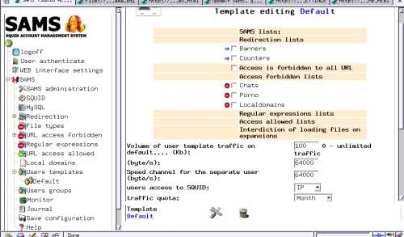

Cписки SAMS
Перенаправление запроса
WEB интерфейс SAMS позволяет настроить механизм перенаправления запросов
с подменой контента, используемый обычно для блокировки баннеров. Подмена
контента происходит на графический прозрачный gif файл размером 1x1 пиксел.
Для настройки перенаправления запросов выставьте галочки напротив
списков из раздела "Перенаправление запроса"
Запрет доступа
предназначен для
запрещения доступа пользователей к нежелательным ресурсам (чаты, развлекательные сайты и т.д.).
Для настройки блокировки запросов выставьте галочки напротив
списков из раздела "Запрет доступа"
Доступ к URL разрешен
Также возможна настройки работы пользователей в режиме доступа только к определенным
ресурсам, заранее заданным в списках "Доступ разрешен". Доступ к ресурсам, не заданных в этих
списках, будет заблокирован.
Для выбора этой возможности необходимо активировать режим " Доступ к URL разрешен".
Объем трафика пользователя шаблона по умолчанию (Mb)
Устанавливает значение объема трафика по умолчанию, получаемого пользователями.
Это значение подставляется в свойства пользователя, при его регистрации в SAMS.
0 - трафик пользователя неограничен.
Скорость канала для всего шаблона
Настройка скорости доступа всех пользователей, у которых прописан этот шаблон, к SQUID.
Например, у вас скорость канала 1024 бит. если установить скорость шаблона в 128000 бит,
все пользователи шаблона будут делить между собой эту скорость.
Скорость канала для отдельного пользователя
Настройка скорости доступа одного пользователя, у которого прописан этот шаблон, к SQUID.
Даже если скорость шаблона выставлена в 128000 бит и к SQUID подключен только 1 пользователь,
приустановке этого значения, например в 8000 бит, реальная скорость пользователя не превысит 8000 бит.
период задания лимита трафика
- месяц
- неделя
- любой период в днях. В этом случае активируется поле введения даты следующего
сброса счетчика трафика пользователей. Счетчики трафика для пользователей этого шаблона очищаются в
указанную в поле дату (при сбросе счетчика в поле будет занесена дата следующей очистки счетчтков)
или, если прокси сервер в 00 ч. 00 мин. этой даты был выключен, в любой другой день в 00 ч. 00 мин.
Способ авторизации пользователей
Задается способ авторизации пользователей шаблона на прокси сервере SQUID. Может быть выбран
способ авторизации по ip адресу и один из способов: NTLM, NCSA.
Настройка времени доступа пользователя к SQUID
Настраивается время доступа пользователя к SQUID.
предположим, необходимо обеспечить доступ пользователей к SQUID 5 рабочих дней в неделю, с 8.00 до 18.00. Доступ к развлекательным сайтам запрещен. Авторизация пользователей по ip адресу, период действия квоты трафика - 1 день.
Создаем новый шаблон. Отмечаем списки запрета доступа и списки перенаправления запроса.
Задаем способ авторизации пользователей на прокси сервере - ip.
Задаем период ограничения трафика "Другой период", "Период" = "1".
В поле " Дата следующего обнуления счетчика трафика" появит дата - 1 число следующего месяца.
Исправьте ее на следующий день
Выставляем рабочие дни недели: понедельник - пятница и время: 8.00 - 18.00
Пример 2
предположим, необходимо обеспечить доступ пользователей к SQUID 5 рабочих дней в неделю, с 9.00 до 18.00. Доступ разрешен только к сайтам с необходимой информацией.
Создаем новый список в разделе "Доступ разрешен", куда заносим список разрешенных сайтов.
Создаем новый шаблон. Отмечаем списки разрешенных сайтов и списки перенаправления запроса.
Задаем способ авторизации пользователей на прокси сервере.
Задаем период ограничения трафика.
Выставляем рабочие дни недели: понедельник - пятница и время: 9.00 - 18.00